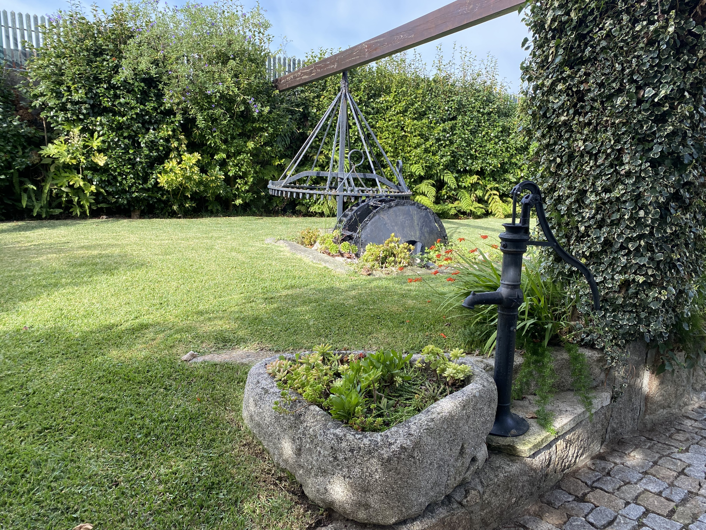

Chegada
Receção dos convidados num ambiente verde, sereno e fácil de encontrar.

Quinta Casal Camaz | Aveleda
Há mais de 30 anos que a Quinta Casal Camaz recebe casamentos, batizados, comunhões, eventos corporativos e outras celebrações em Aveleda, Vila do Conde.
Desde 1995
A Quinta Casal Camaz começou como uma casa agrícola, muito antes de abrir as portas a casamentos e celebrações.
Foi em 1995 que tudo começou a mudar. Por ocasião de um casamento na família, alguns dos espaços da casa agrícola foram preparados para receber a celebração. Dessa transformação nasceu o primeiro salão da Quinta e, com ele, uma nova forma de dar vida à casa. Nas décadas seguintes, a Quinta foi crescendo com a família. O primeiro salão ganhou uma nova função, surgiu o atual salão principal e os diferentes espaços foram sendo adaptados àquilo que hoje é a Quinta Casal Camaz. Mais de 30 anos depois, e já na terceira geração, começa uma nova etapa. O salão principal será ampliado para receber até 250 convidados e os espaços mais antigos serão renovados, preservando a identidade da Quinta enquanto se prepara o seu futuro. Três gerações depois, a Quinta continua a mudar sem deixar para trás o legado que a trouxe até aqui.


Os salões
Madeira, pedra e luz quente criam uma atmosfera confortável e intemporal. Os salões podem adaptar-se a diferentes formatos de evento, desde refeições familiares a grandes celebrações.


Os jardins
Os espaços exteriores acompanham o ritmo do dia: receção ao ar livre, fotografias entre o verde, momentos de pausa e um cenário envolvente quando as luzes se acendem ao final da tarde.
Um ambiente sossegado e acolhedor, com a tranquilidade característica do meio rural.
Mais do que um espaço
Receção dos convidados num ambiente verde, sereno e fácil de encontrar.
Salões flexíveis, atmosfera intimista e ligação natural ao exterior.
Recantos, jardins e fachadas com personalidade para fotografias únicas.
Galeria
Como chegar
A Quinta Casal Camaz situa-se em Aveleda, Vila do Conde, a meia distância entre o Porto e Vila do Conde. O acesso é simples pela A28, com o Aeroporto Francisco Sá Carneiro e a estação de Metro de Vilar do Pinheiro nas proximidades.
Vamos conversar?
Pode marcar uma visita à quinta por email ou telefone. Conte-nos a data, o tipo de evento e o número aproximado de convidados.